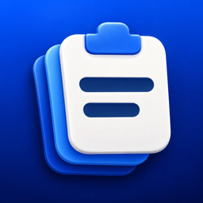

Clipo
Chính sách quyền riêng tư · Privacy Policy
Chính sách quyền riêng tư
Có hiệu lực từ ngày 11/10/2026
Clipo là ứng dụng lưu lịch sử copy kèm bàn phím, do Nguyễn Thế Mạnh phát triển. Chúng tôi không thu thập dữ liệu của bạn: Clipo không có tài khoản, không quảng cáo, không công cụ phân tích và không theo dõi bạn.
Lịch sử copy
Những gì bạn copy (chữ, ảnh, tệp) chỉ được lưu trên iPhone của bạn, trong bộ nhớ dùng chung giữa app Clipo và bàn phím Clipo. Chúng tôi không nhận và không thể xem dữ liệu này. Bạn có thể xoá từng mục hoặc toàn bộ lịch sử trong app; gỡ app sẽ xoá hết.
Bàn phím và quyền "Truy cập đầy đủ"
Bàn phím Clipo cần quyền Truy cập đầy đủ để đọc nội dung bạn vừa copy, dùng chung lịch sử với app và dùng tính năng AI. Clipo không ghi lại các phím bạn gõ và không gửi những gì bạn gõ đi đâu, ngoại trừ khi bạn dùng tính năng AI như mô tả bên dưới. Không bật quyền này, bàn phím vẫn gõ được bình thường.
Tính năng AI (tuỳ chọn)
- Apple Intelligence: được Apple xử lý trên iPhone hoặc qua Private Cloud Compute, theo chính sách quyền riêng tư của Apple.
- Claude (Anthropic): chỉ hoạt động khi bạn tự thêm API key Anthropic của mình. Khi bạn dùng ✨ (viết lại, gợi ý trả lời, hỏi AI), nội dung liên quan — chữ trong ô đang gõ, câu hỏi của bạn, nội dung copy gần nhất và, với gợi ý trả lời, ảnh chụp màn hình gần nhất — được gửi thẳng từ iPhone của bạn tới API của Anthropic bằng key của bạn. Việc xử lý tuân theo chính sách của Anthropic. Chúng tôi không nhận được các nội dung này.
- API key của bạn được lưu trong Keychain trên iPhone.
Ảnh
Nếu bạn cho phép truy cập Ảnh, Clipo chỉ đọc ảnh chụp màn hình mới nhất (chụp trong 10 phút gần đây) khi tính năng gợi ý trả lời chạy, để AI biết bạn đang trả lời nội dung nào. Clipo không đọc, không lưu và không gửi các ảnh khác. Bạn có thể tắt việc này trong Clipo › Cài đặt › Trợ lý AI.
Góp ý
Khi bạn gửi góp ý trong app, Clipo mở sẵn một email để bạn tự gửi bằng ứng dụng Mail của mình, kèm phiên bản app, phiên bản iOS và đời máy để chúng tôi dễ xử lý lỗi. Chúng tôi chỉ dùng email đó để trả lời bạn.
Trẻ em
Clipo không hướng tới trẻ em dưới 13 tuổi và không cố ý thu thập dữ liệu của trẻ em.
Thay đổi và liên hệ
Nếu chính sách thay đổi, chúng tôi sẽ cập nhật trang này. Mọi câu hỏi xin gửi về manhdigital68@gmail.com.
Privacy Policy
Effective October 11, 2026
Clipo is a clipboard history app with a keyboard, developed by Nguyễn Thế Mạnh. We don't collect your data: Clipo has no accounts, no ads, no analytics and no tracking.
Copy history
What you copy (text, images, files) is stored only on your iPhone, in storage shared by the Clipo app and the Clipo keyboard. We never receive it and can't see it. You can delete single items or your whole history in the app; deleting the app removes everything.
The keyboard and "Full Access"
The Clipo keyboard needs Full Access to read what you just copied, share your history with the app and use AI features. Clipo doesn't log your keystrokes and doesn't send what you type anywhere, except when you use the AI features described below. Without Full Access the keyboard still types normally.
AI features (optional)
- Apple Intelligence: processed by Apple on your iPhone or through Private Cloud Compute, under Apple's privacy policy.
- Claude (Anthropic): works only after you add your own Anthropic API key. When you use ✨ (rewrite, reply ideas, Ask AI), the relevant content — the text in the field you're typing in, your question, your latest copy and, for reply ideas, your latest screenshot — is sent directly from your iPhone to Anthropic's API with your key. It is handled under Anthropic's policies. We never receive it.
- Your API key is stored in the Keychain on your iPhone.
Photos
If you allow Photos access, Clipo only reads your most recent screenshot (taken in the last 10 minutes) when reply ideas run, so the AI knows what you're replying to. Clipo doesn't read, store or send any other photos. You can turn this off in Clipo › Settings › AI assistant.
Feedback
When you send feedback from the app, Clipo prepares an email that you send yourself from your mail app, with the app version, iOS version and iPhone model so we can look into problems. We only use it to reply to you.
Children
Clipo is not directed to children under 13 and doesn't knowingly collect children's data.
Changes and contact
If this policy changes, we'll update this page. Questions: manhdigital68@gmail.com.